Shelby Jouppi
Now: Investigative data journalist reporting on pollution and health for Public Health Watch.
Then: public radio, news apps, podcasts
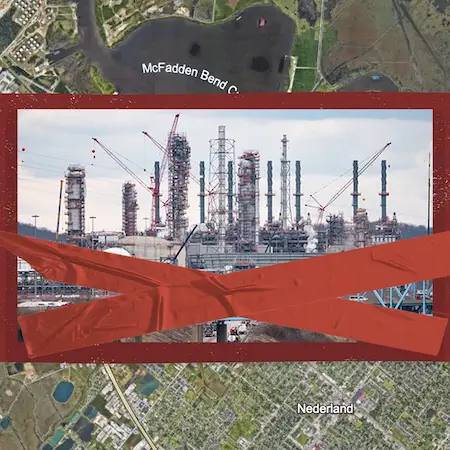
Energy Transfer Backs Out of Texas Gulf Coast Plastics Plant
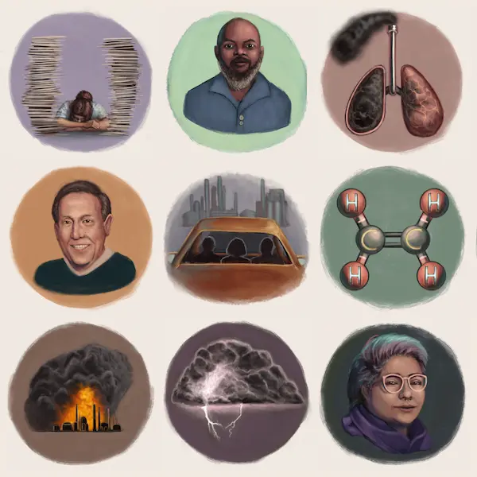
Texas Clears the Way for Petrochemical Expansion as Experts Warn of Health Risks
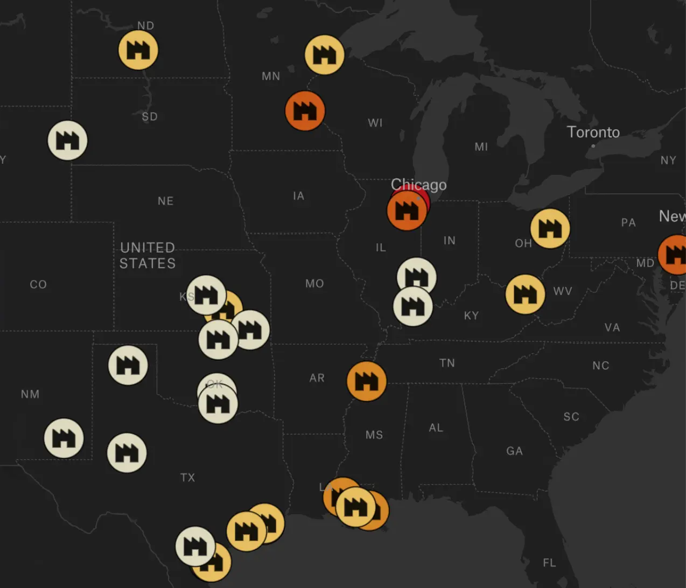
Do You Live Near a Refinery That Uses Hydrogen Fluoride?
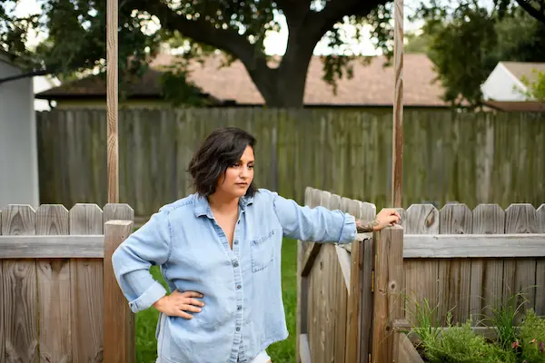
Trump Pollution Exemptions Would Shield Lawbreakers, Endanger Millions
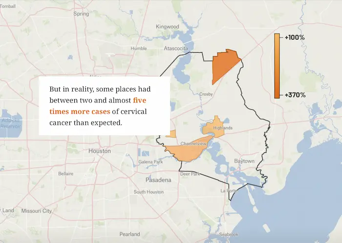
Visualizng Data Aggregation in Cancer Studies
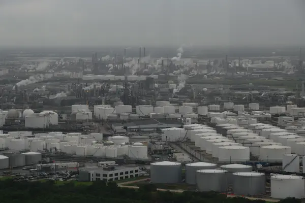
Trump Exempts Biggest Emitters of Two Carcinogens from Pollution Rule
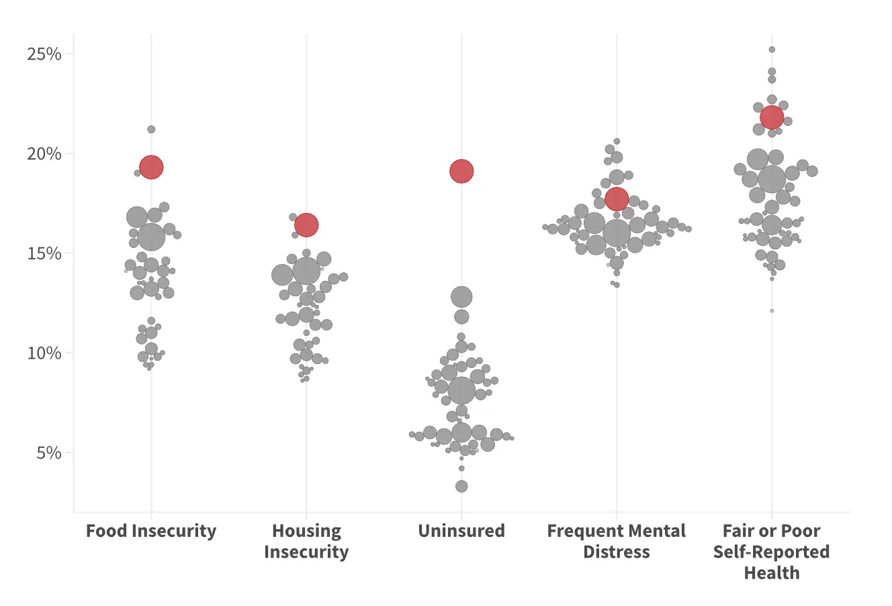
Biggest Loser in the 89th Texas Legislature: Public Health
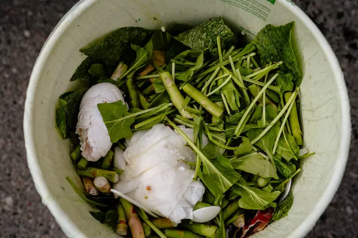
Compost or Combust: How Michigan Can Stop Food Waste
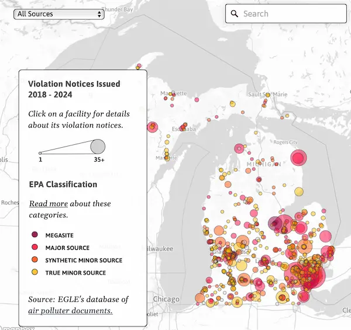
Michigan Air Permit Violatin Dashboard
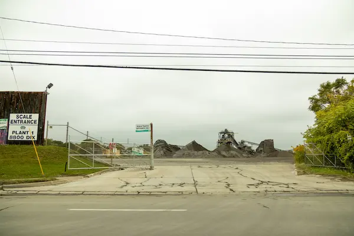
Southwest Detroit Steel Slag Processor Receives 12th Air Quality Permit Violation for Fallout
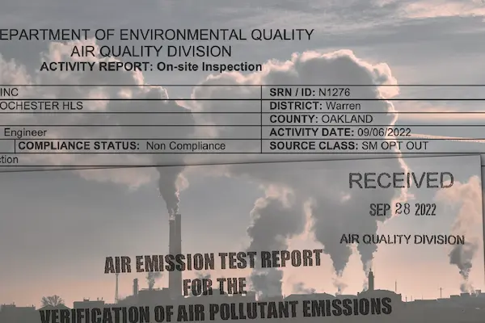
Creating a Living Dataset of Michigan Air Pollution Records
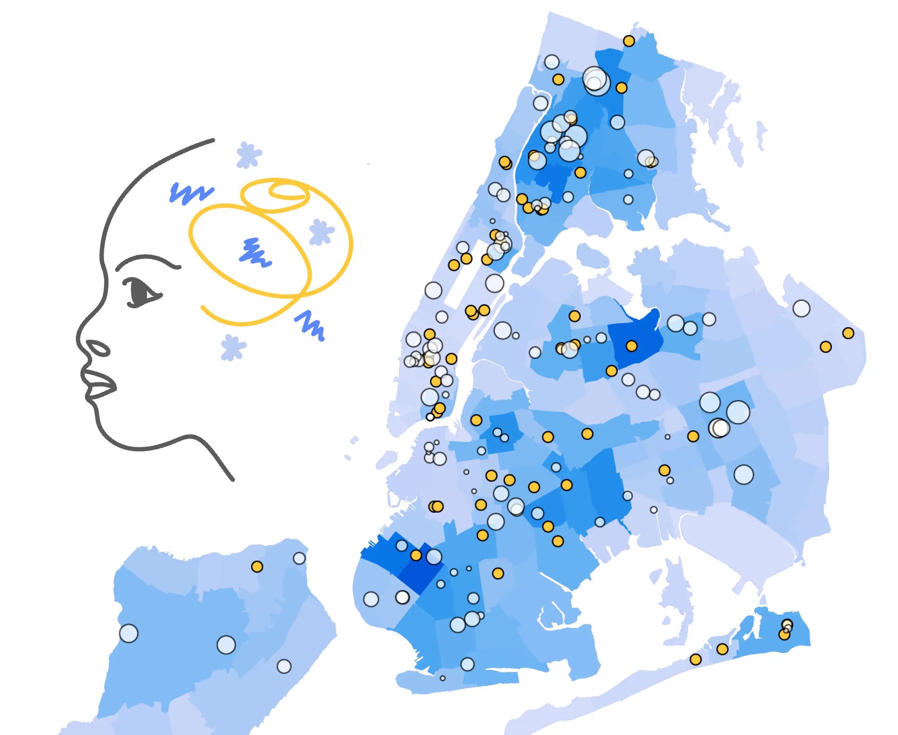
Gathering and Visualizing Pediatric Wait Times at 172 NYC Mental Health Clinics
Investigating the Origins of the Nationwide Critical Race Theory Debate
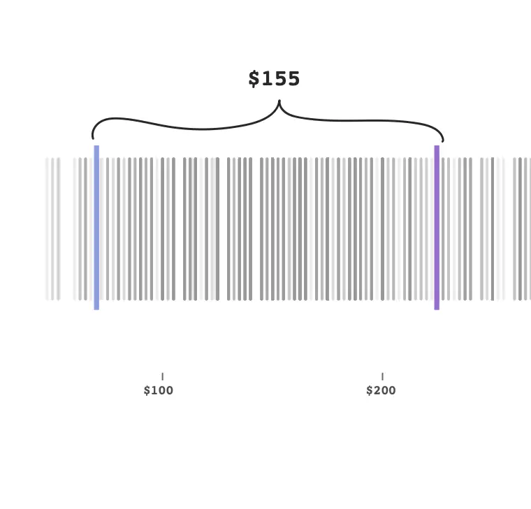
How New York Medicaid's Psychotherapy Rates Measure Up
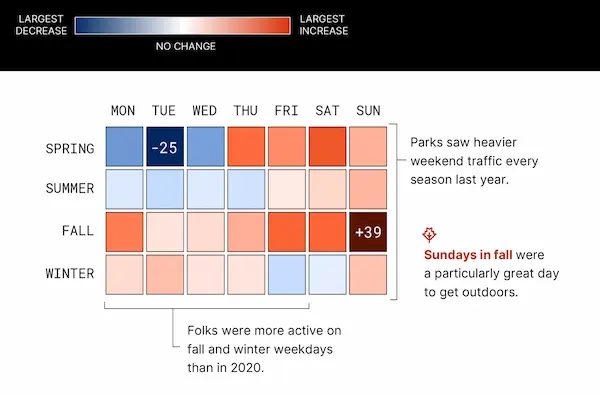
Visualizing Denver's Increasing Park Traffic
About
I'm a public health journalist who uses deep research and computational methods—data collection, analysis and visualization—to investigate environmental and health issues. I joined the nonprofit investigative newsroom Public Health Watch in early 2025 where I and an amazing team of reporters have been covering the petrochemical industry on the Texas Gulf Coast and the communities impacted by it.
I have a decade of experience managing, collaborative projects, creating public service journalism and crafting beautiful, informative visual media.
I spent the first four years of my career at WDET, Detroit Public Radio as a multimedia reporter creating videos, graphics, interactive stories and audio features for news and culture programs. I led the station's audience engagement series "CuriosiD" and helped helped launch its first original storytelling podcast. I then worked as an independent graphic and web designer for local newsrooms and nonprofits and produced a podcast in partnership with PRX and The Moth.
In 2022, I earned my master's degree in data journalism from Columbia University, where I reported on mental health care accessibility. Afterward, I worked independently on award-winning environmental reporting projects and dashboards for Planet Detroit.